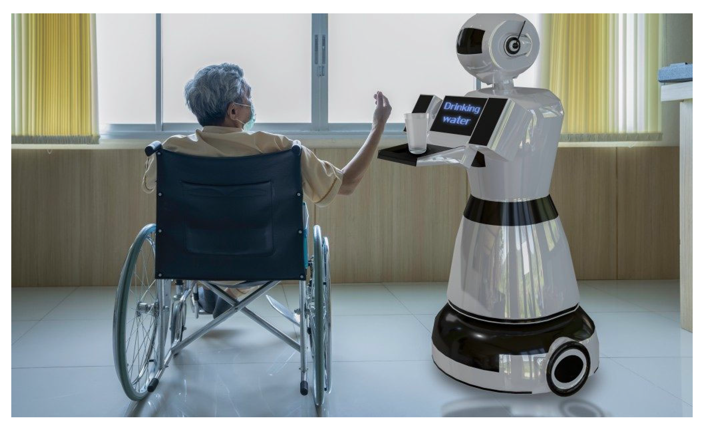
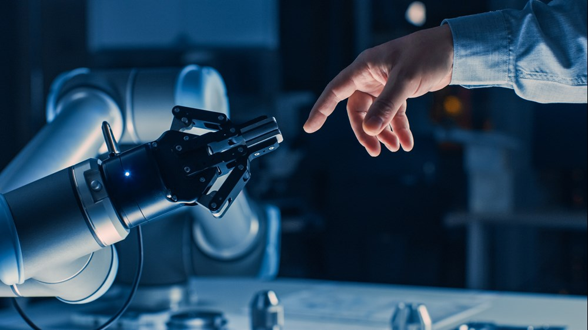

Here, I will explain a relevant topic in Computer Engineering, in this case the topic will be Assistive Robots

General Overview
Assistive robots are a type of robots whose function is to provide support to people with medical
problems, disabilities or simply elder people. These robots also tend to have a humanoid form to make
the interaction with them feel more like an interaction between humans.
Tehcnology behind
Assistive robots combine different types of technology in order to create a very complex robot like these ones.They make most use
from AI thanks to the Natural Language Processing (NLP) giving the the ability to interpret and comprehend human language, they also take
advantage of the three types of Machine Learning Trainings for their algorithms. Talking about Hardware, the most important thing an assistive
robot needs are sensors, sensors are the things that enables an assistive robot to recognise things, navigate, to "see" and to "hear" among other things.
Finally, these robots count with an specific and complex software program that enables communication with humans, making it the key to their success at their function

Advantages and Disadvantages
Assistive robots have their good and bad things, obviously this type of robots are very useful for people with disabilities or medical problemas because thanks to them
they gain more independence from other humans and they are able to do daily task without help from humans, while this assistive robots can also help on their medical treatment
by recognising the origin of the problem or by analysing the best method of recovery and help at rehabilitation for people with disabilities of injuries if needed. But these robots also
can create an employment displacement due to being able to do the fuctions that many workers (nurses, doctors, reahbilitators...) do and thus replacing them, also they are really expensive, therefore creating an economic
barrier and making them innacesible for some people.
The future of assistive robots
Assistive robots in the near future are going to evolve thanks to the new technologies. Some of the objectives for the future are this ones:
- Personalisation: In the future, assistive robots will be able to adapt to the unique needs for each individual and the many changes he might have, this will be done using
a hierarchical human-robot learning framework, in which the robot will learn to adapt to the need of the user and with the time improve his efficiency
- Varied enviroments: Assistive robots are far to useful to be only used in hospitals and clinics, so one obejctive is to bring them to a more casual enviroment like houses or shops
- More natural interaction: With the increase in conectivity, the algorithms of machine learning have evolved at a very high speed, therefore thanks to that, assistive robots can improve
their systems and algorithms to enhance communication with humans and make it more natural, less "robotic" and easier for them to understand and execute what we need them to do
This are the main objectives for the future, there are some mone regarding privacy, ethic and more topics but those objectives are still far away for now.